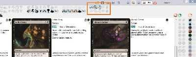
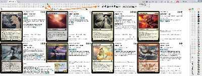

Home
Mtgdb.Gui is a Windows application to search MTG cards, build decks and keep track of
collection.
It is free and opensource.
Forum thread to get support or sumbit your feedback
| Feature | Illustration |
|---|---|
| Database conains all MTG sets up to Ixalan and Commander 2017 |

|
| Built-in update. Images, data and the program itself are updated from Update window |

|
| Import collection from Magic The Gathering Online. You can also load and save decks in MTGO-compatible format. | details |
| Drag-n-drop and copy-paste deck to instantly import deck from websites and external applications | details |
| Deck editor | details |
| Collection editor | details |
| Supported deck formats |
Cockatrice
supports the deck format used by Magarena
Patched by me Riiak's DotP 2014 Deck Builder supports Forge
deck format
|
| Filters | |
|
One-click filter buttons
let you instantly filter
cards by common properties such
as abilities |

|
|
Search by text in Lucene query language. Search string supports syntax highlighting and intellisense. |

|
| Filter by legality |

|
|
Filter by cards in your collection |
 |
| Filter by cards in your deck | |
| Choose between AND / OR operators to combine filters | |
|
Show or hide card duplicates in search result. Namesakes can be confusing when creating a deck or building some statistics. But sometimes you want to put into your deck a specific version of a beautiful island. Check |

|
|
Sort by most fields, sort by multiple fields |

|
|
Statistics charts |

|
|
Zoom |

|
| Showing card back for flipped cards or meld pair / melded card for meld cards | details |
|
Undo / redo changes in deck, filters and so on. Works even after closing the program and starting it again. |

|
| Translations to all languages supported by Gatherer. Including russian, spanish, portugal and etc. |

|
| Printing proxies on A4 paper |

|
| Tooltips on most user interface elements |  |
| Search result highlighting | |
| Using images from Mtgdb.Gui in Forge. With High Quality images anything gets prettier :) | details |
| Using card images you already have with Mtgdb.Gui | details |
| Showing the last card removed from deck in search result even if it doesn't matches filter | The people who used Magic Duel's online deck builder will understand me. It is such an annoying thing when you have a filter, then you remove a card, and you cannot quickly undo as the card disappears from search result. |
| This help can also be considered a feature worth mentioning | Â |
{kind=link}
{kind=link}